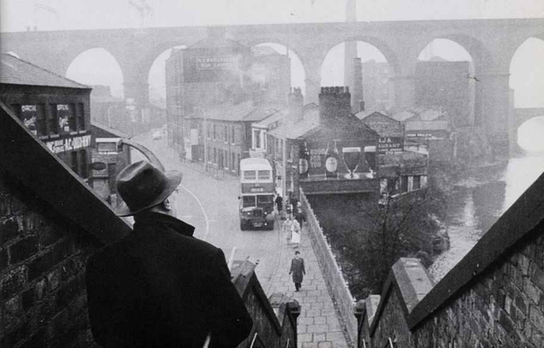
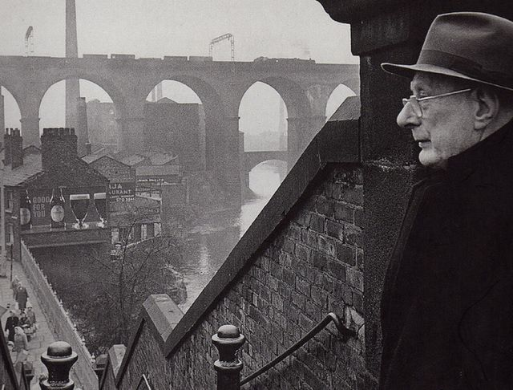
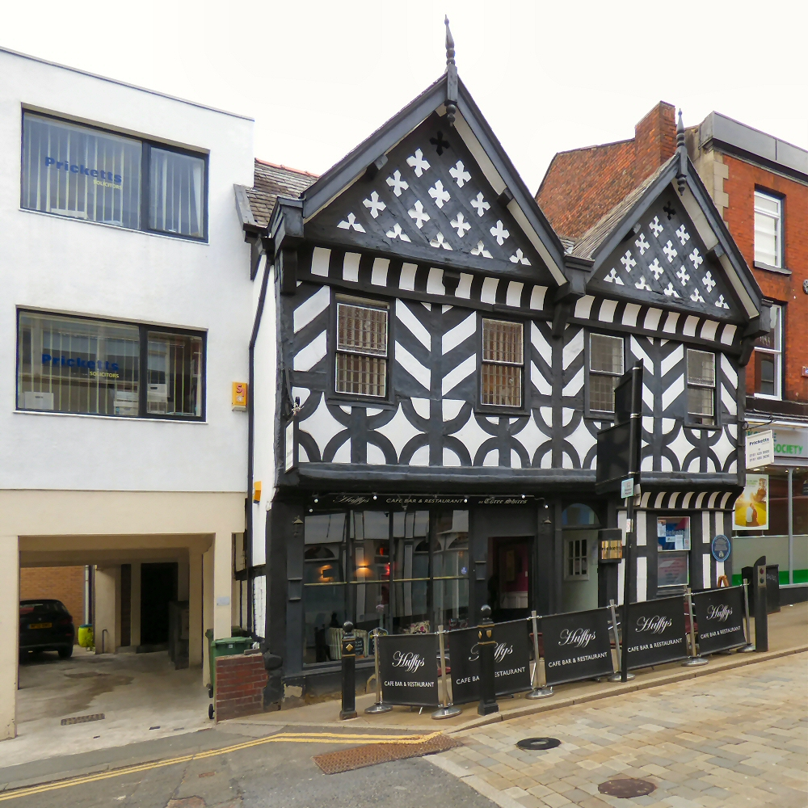
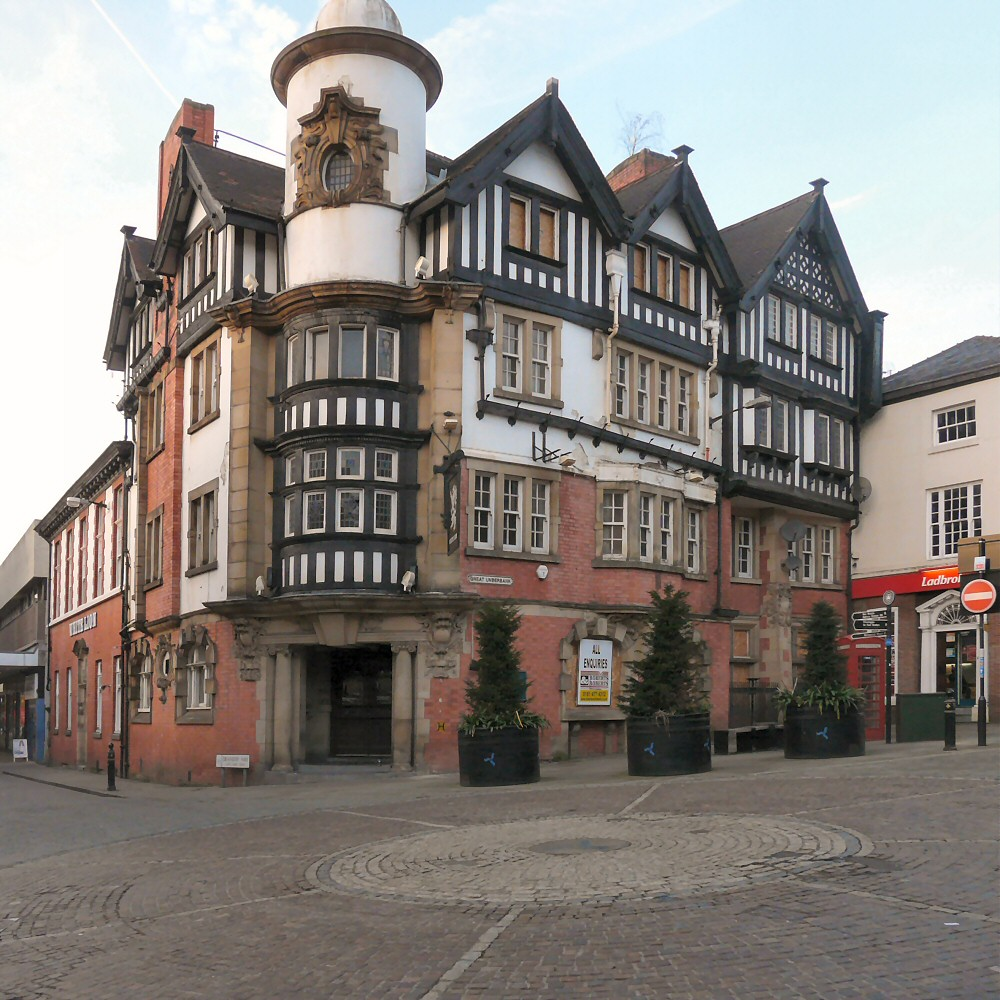
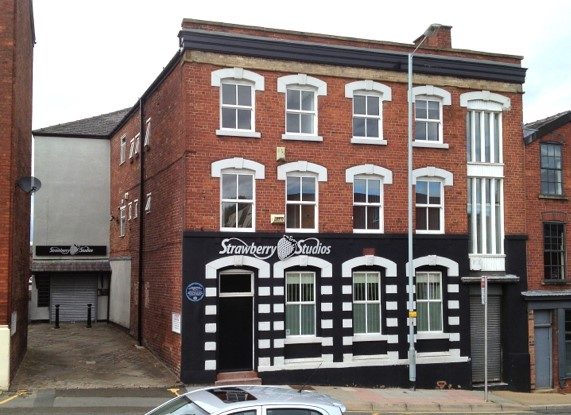
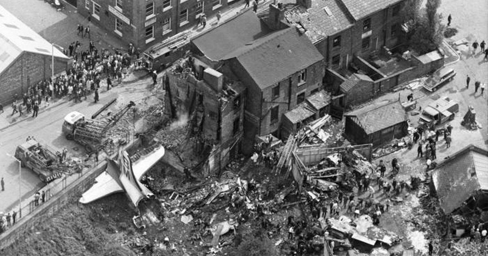
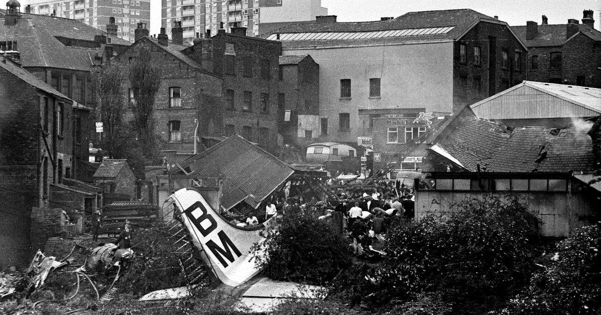
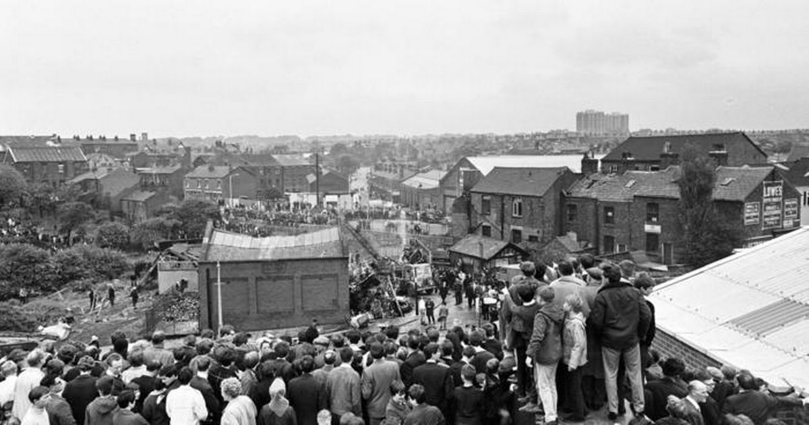
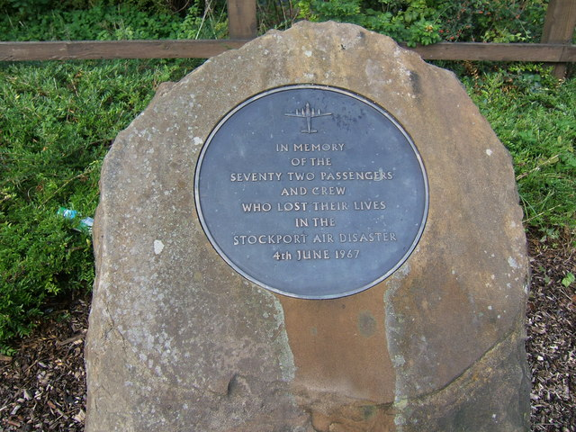
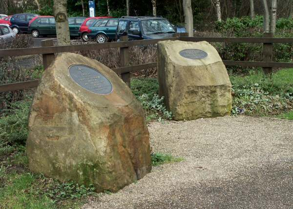

L.S. Lowry on Wellington Bridge Steps, Stockport 1962 © Unknown

L.S. Lowry looking over Stockport, 1962 © Unknown
 L.S Lowry painting "A street in Stockport"
L.S Lowry painting "A street in Stockport"
 Crowther Street, Stockport © Unknown
Crowther Street, Stockport © Unknown
 St Mary's Parish Church, Stockport Market Place © Creative Commons
St Mary's Parish Church, Stockport Market Place © Creative Commons
 Stockport Market Hall © Creative Commons
Stockport Market Hall © Creative Commons
 Stockport Town Hall © Public Domain
Stockport Town Hall © Public Domain
 Underbank Hall © Creative Commons
Underbank Hall © Creative Commons
 The Queen's Head, Little Underbank © Creative Commons
The Queen's Head, Little Underbank © Creative Commons

Three Shires Hall, Great Underbank © Creative Commons

The White Lion, Stockport © Creative Commons

Strawberry Studios, 3 Waterloo Road © Creative Commons

Stockport Air Crash 4 June 1967, Hopes Carr, Stockport. © Unknown

Stockport Air Crash 4 June 1967, Hopes Carr, Stockport. © Daily Mirror

Stockport Air Crash 4 June 1967, Hopes Carr, Stockport. © Unknown

Stockport Air Crash memorial © Creative Commons

Stockport Air Crash memorial © carlscam.com